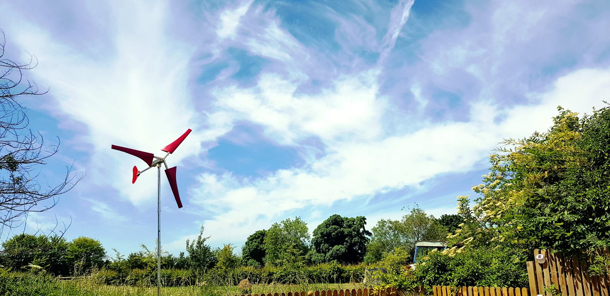
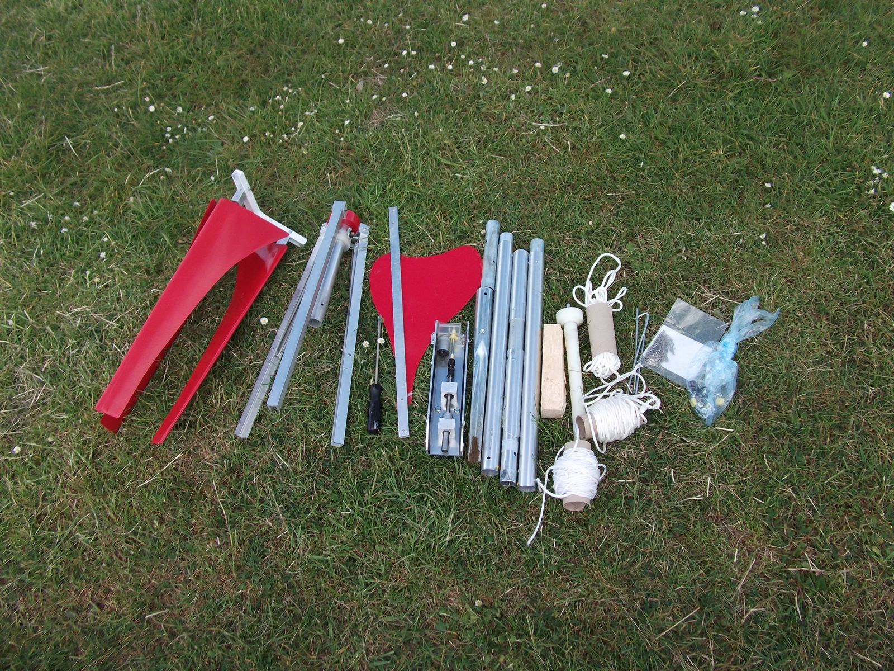
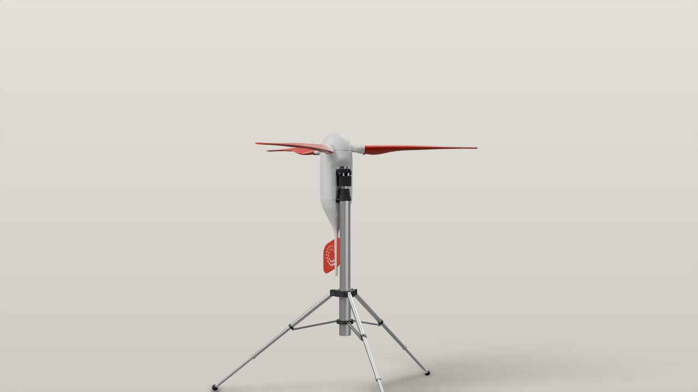

My first hardware venture. Portable wind power for expeditions and camping, for the hours solar can't cover. I built the first prototype in 2011, took it through Cardiff University and won £5,000 in innovation awards. Then I stopped. This page is the product, the plan and what I'd do differently now.
Off-grid, people still need to charge small things: phones, GPS, radios, cameras. Portable solar does that well in daylight. My bet was that wind could cover the rest - nights, bad weather and high latitudes.
2 markets, in order. First the people who'd pay for something tough: expedition, research and aid teams working where there's no grid. Then campers, with a cheaper version at about £150.
What I had to go on in 2014: a survey of 60 campers, where 54% said they struggle to find power and would use a portable source. 2 replies from charities, both polite. And 2 competitors, 1 of them still on Kickstarter.
Built in 2011 as my A-level project, after reading that the US Army wanted a wind turbine 1 soldier could carry. Glass fibre blades, a steel hub, a bought-in gearbox and motor, poles, guy ropes and a heart-shaped tail. It went up in about 15 minutes and it generated.
My write-up ended with a list of fixes: lighter poles that telescope, a more compact fold and better looks. That list became the next version.


In 2015 I redesigned it. New blades from Blade Element Momentum theory, checked in CFD for my dissertation. A rotor that folds, a head that tilts and a telescopic mast, so it packs as 1 piece. The model said 500W in a 13 m/s wind.
I never got round to the covers. In 2026 I handed the old CAD to an AI agent and asked it to finish the job: design the casework, animate the fold and build this page. Scroll to put it up.

Everything folds around the mast: blades back along the body, head tipped upright, tripod closed. Under 1m long in this model.
3 legs swing out on a sliding collar and telescope, like a camera tripod.
The blades hinge out before the mast goes up, while you can still reach them. 1.2m across.
The head tips forward on 1 pivot and locks. The rotor now faces the wind.
6 telescoping tubes lift the hub to about 3m. Guy lines not shown.
Covers off. Black labels are my 2015 CAD. Red labels are the 2026 concept.
I wrote the business plan with a module team at Cardiff in 2014. 3 turbines in 3 phases, with profit from T2 meant to pay for T3.
Prototype built and tested. Won the Da Vinci award, £3,000, to build the next one.
For expedition and aid teams. Telescopic guyed mast, parts you can repair in the field, small batches.
For campers at about £150, through outdoor shops and online.
It needed £180,000 of outside money before it paid for itself: a £50,000 seed fund, a £50,000 bank loan and £80,000 from a regional fund. First revenue was meant to be bulk orders from charities. We had 2 replies and no orders.
It was only a team for the module. Once the business plan was handed in, nobody else wanted to carry on. I kept building for a while, then got a place at the Alacrity Foundation. That was full time, so I dropped it.
It was more of a passion project than something I thought had real legs.
Solar and batteries won. A 100W folding solar panel starts at about £100 in the UK now.1 Portable wind turned out to be a real niche and a small one: the best-known one on sale, Shine, is 40W, about 1.4kg and around $400.2
The problem got smaller too. Our plan opened with 1.5 billion people without electricity. The IEA's count for 2024 is 730 million.3
And the physics didn't move. Power goes with the cube of wind speed, so the 500W headline needs 13 m/s, which is Force 6. My own CFD curve gives 13W at 4 m/s and 26W at 5 m/s.
My first go at building a business from hardware, and the first time I went out to raise money. It showed me I was missing the commercial side, so I went to the Alacrity Foundation and co-founded Volunteer Space to learn it.
What's real: prototype 1, its photos and footage, the mechanism CAD from 2015, the awards and the 2014 plan. What's concept: the white covers, hub fairing, tail, redrawn logo and the film, made in November 2026 with Claude from my original files. The 500W figure comes from my dissertation model and was never tested.